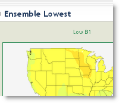
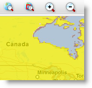

Future Climate Models
This application allows you to interactively investigate and compare various Future Climate Models and Scenarios. Built in collaboration with ESRI.
Best viewed in Firefox, Chrome, Safari or Internet Explorer 7 or above.
Global Climate Change
This application shows future projected change in mean temperature (F) from the 1961-1990 baseline average using the Average Ensemble climate model with A2 CO2 emissions scenario. Built in collaboration with ESRI.